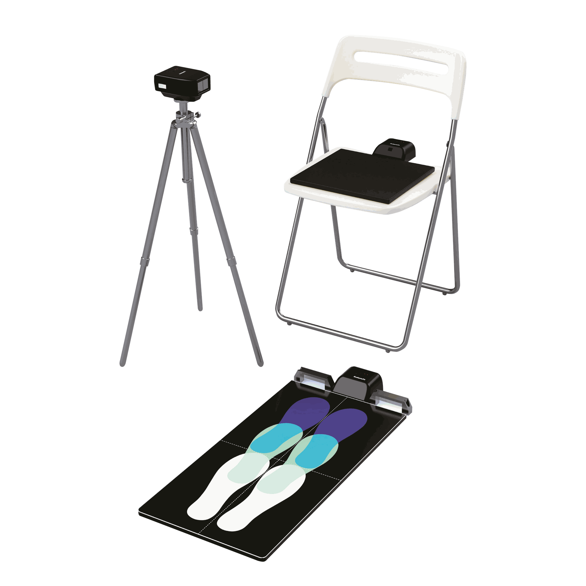

AndanteFit proporciona la administración automatizada de la Short Physical Performance Battery (SPPB), garantizando una evaluación funcional estandarizada y reproducible en entornos clínicos y de investigación.
Medición continua basada en LiDAR que elimina el cronometraje manual y los errores humanos
Evaluación SPPB completa en menos de 3 minutos por participante con captura automática de datos
Sin formación especializada; resultados consistentes entre diferentes evaluadores y centros
El SPPB es una herramienta estandarizada y validada para evaluar la función de las extremidades inferiores en personas mayores. Consta de tres pruebas objetivas de rendimiento.
Más información sobre el SPPB →Prueba de marcha de 4 metros que mide la movilidad funcional. AndanteFit admite condiciones de inicio estático y dinámico con seguimiento continuo de la velocidad mediante LiDAR.
Cinco repeticiones de levantarse y sentarse para evaluar la fuerza de las extremidades inferiores. La detección automatizada elimina la variabilidad del cronometraje manual.
Posiciones progresivas de equilibrio de pie (paralelo, semitándem y tándem). El monitoreo preciso garantiza el cumplimiento del protocolo.

AndanteFit estandariza todo el flujo del SPPB mediante un único sistema de hardware. La medición, puntuación y clasificación del riesgo de fragilidad se completan en menos de tres minutos.
Informe clínico completo
La evaluación del rendimiento físico basada en el SPPB está respaldada por guías internacionales en una amplia variedad de condiciones relacionadas con la salud de las personas mayores.
Medida estándar de función física en las guías EWGSOP2, FNIH Sarcopenia Project y AWGS 2019. Resultado primario en ensayos de intervención farmacológica y ejercicio en sarcopenia.
Incluido para la evaluación de la capacidad locomotora en el marco ICOPE de la OMS para la atención integrada de personas mayores en entornos comunitarios.
Recomendado por ESMO/SIOG (2021) y ASCO como parte de la valoración geriátrica integral (VGI) y la estratificación del riesgo de toxicidad en pacientes mayores con cáncer.
Incluido en las guías JCS/JACR para la evaluación funcional de las extremidades inferiores y la movilidad durante los programas de rehabilitación cardíaca.
Aplicado para el seguimiento objetivo de la recuperación funcional tras inyecciones epidurales de corticoides (ESI) y en pacientes con patología musculoesquelética crónica.
Utilizado en NHANES, KLHAS, NHS y SPRINT para rastrear trayectorias funcionales y resultados de salud en poblaciones envejecidas de múltiples países.
Desde 2018, AndanteFit se ha utilizado para apoyar la prevención de la fragilidad en entornos comunitarios. Como parte de nuestras iniciativas de responsabilidad social, también se ofrecen unidades demo para servicios comunitarios y proyectos de investigación.